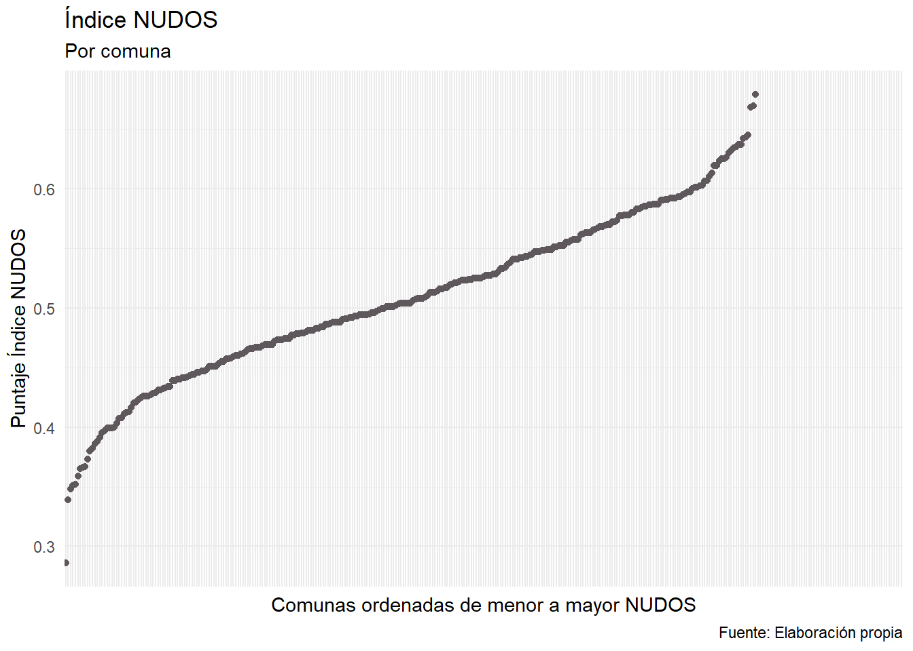
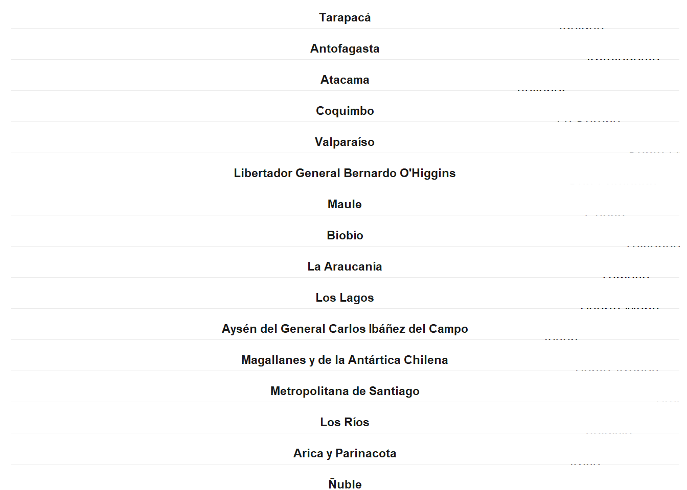
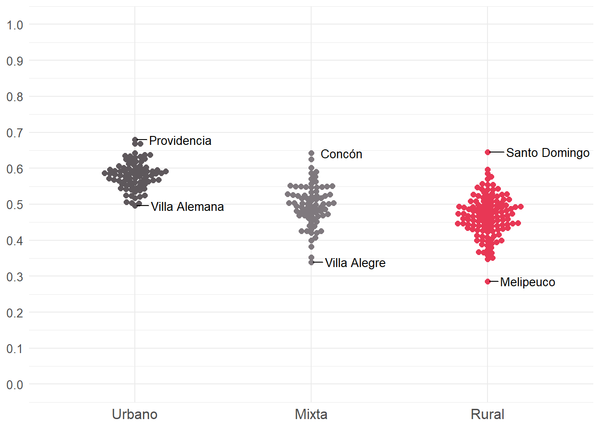
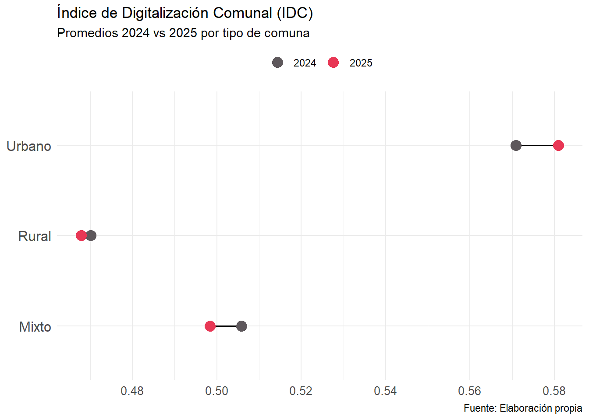
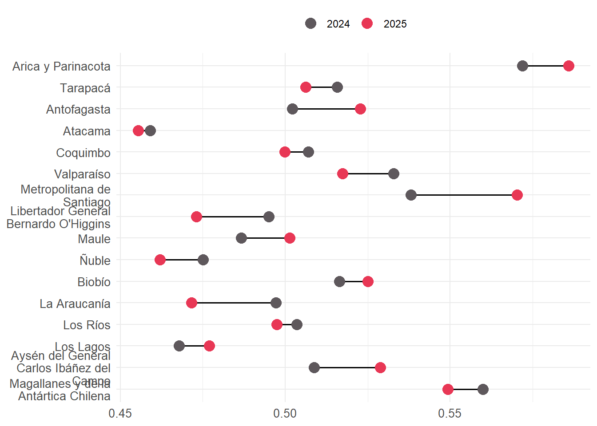

setwd(here::here())
pacman::p_load(
#Procesamiento de datos
tidyverse, naniar, sjmisc, labelled,
#Visualizaciones
ggplot2, ggbeeswarm, ggrepel
)
paleta_colores <- c("#7F797E", "#E83755", "#5E585C")
idc <- readRDS("data/proc_data/public_data/2025_idc_v2.rds")
idc <- idc %>%
mutate(
comuna = haven::as_factor(comuna), # comuna como factor (nombres)
region = haven::as_factor(region), # región como factor (etiquetas)
idc_2025 = as.numeric(haven::zap_labels(idc_2025)) # asegurar numérico limpio
)2025-d-idc-report
Gráfico 1. Puntaje por Comuna
idc|>
ggplot(aes(y = idc_2025, x = reorder(id_comuna, idc_2025))) +
geom_point(color = "#5E585C") +
labs(x = "Comunas ordenadas de menor a mayor NUDOS",
y = "Puntaje Índice NUDOS",
title = "Índice NUDOS",
subtitle = "Por comuna",
caption = "Fuente: Elaboración propia") +
theme_minimal()+
theme(
axis.text.x = element_blank(),
axis.ticks.x = element_blank(),
axis.line.x = element_blank()
)Warning: Removed 60 rows containing missing values or values outside the scale range
(`geom_point()`).
Gráfico 2. Puntaje comunal por región
# Crear un subconjunto de datos con la variable de interés
idc_subset <- idc %>%
drop_na(idc_2025) %>%
arrange(region, desc(idc_2025)) %>%
to_label()
top_comunas <- idc %>%
drop_na(idc_2025) %>%
group_by(id_region) %>%
filter(idc_2025 == max(idc_2025)) %>%
ungroup()
# Graficar el Índice de Desarrollo Humano Comunal
ggplot(idc_subset, aes(x = reorder(comuna, -idc_2025), y = idc_2025, fill = region)) +
geom_bar(stat = "identity") +
# Etiquetas solo en la mejor comuna de cada región
geom_text(data = top_comunas,
aes(x = reorder(comuna, -idc_2025), # <- acá agregamos x
y = idc_2025,
label = comuna),
inherit.aes = FALSE,
hjust = -0.1, # un poquito afuera de la barra
size = 3.5) +
facet_wrap(~ region, scales = "free_y", ncol = 1) + # Un facet por cada región, con escalas independientes
coord_flip() + # Rotar el gráfico para que sea horizontal
labs(title = "Índice de Digitalización Comunal",
subtitle = "Por región",
x = NULL,
y = NULL,
caption = "Fuente: Elaboración propia") +
scale_fill_manual(values = rep(paleta_colores, length.out = n_distinct(idc_subset$region))) +
theme_minimal() +
theme(strip.text = element_text(face = "bold"),
plot.title = element_text(face = "bold", size = 14),
plot.subtitle = element_text(size = 12),
axis.title.y = element_blank(),
axis.text.y = element_blank(),
legend.position = "none")
Gráfico 3. IDC por Tipo de Comuna
# Base para beeswarm
beeswarm_plot <- idc %>%
drop_na(idc_2025) %>%
select(id_comuna, comuna, tipo_comuna, idc_2025)
# Comunas a etiquetar: las 3 con menor y 3 con mayor IDC_2025 por tipo_comuna + CHL (ejemplo adaptado)
beeswarm_labels <- beeswarm_plot %>%
mutate(tipo_comuna = factor(tipo_comuna, levels = c("Urbano", "Mixto", "Rural")))%>%
group_by(tipo_comuna) %>%
arrange(idc_2025) %>%
slice(c(1, (n()):n())) %>%
ungroup()
# Graficar
ggplot(beeswarm_plot, aes(y = idc_2025, x = tipo_comuna, color = tipo_comuna)) +
geom_beeswarm(size = 2) +
geom_text_repel(
data = beeswarm_labels,
aes(label = comuna), # Etiquetas = nombre comuna
hjust = -0.2, vjust = 0.5, size = 3.5, color = "black"
) +
scale_color_manual(values = paleta_colores) +
theme_minimal() +
theme(
legend.title = element_blank(),
axis.title.y = element_blank(),
axis.title.x = element_blank(),
axis.text.x = element_text(size = 12),
axis.text.y = element_text(size = 10),
legend.position = "none",
plot.caption = element_text(size = 12)
) +
scale_x_discrete(labels = c("Urbano", "Mixta", "Rural")) + # adapta según tus categorías
scale_y_continuous(breaks = seq(0, 1, 0.1), limits = c(0, 1))
Gráfico 4. Correlación IDC 2025 - IDH Comunal
Gráfico 5. Correlación IDC 2025 - Pobreza Multidimensional
Gráfico 6. Correlación IDC 2024 - IDC 2025
Gráfico 7. Comparación IDC 2024 y 2025 por tipo de comuna
# Calcular promedios por tipo de comuna y año
plot_data <- idc %>%
group_by(tipo_comuna) %>%
summarise(
mean_2024 = mean(idc_2024, na.rm = TRUE),
mean_2025 = mean(idc_2025, na.rm = TRUE)
) %>%
pivot_longer(
cols = starts_with("mean_"),
names_to = "year",
values_to = "score"
) %>%
mutate(year = ifelse(year == "mean_2024", "2024", "2025"))
# Graficar
ggplot(plot_data, aes(x = score, y = tipo_comuna, color = year, group = tipo_comuna)) +
geom_line(color = "black", size = 0.6) + # línea negra conecta puntos
geom_point(size = 4) +
scale_color_manual(values = c("2024" = "#5E585C", "2025" = "#E83755")) +
theme_minimal() +
theme(
legend.title = element_blank(),
axis.title.y = element_blank(),
axis.title.x = element_blank(),
legend.position = "top",
axis.text.y = element_text(size = 12),
axis.text.x = element_text(size = 10)
) +
labs(title = "Índice de Digitalización Comunal (IDC)",
subtitle = "Promedios 2024 vs 2025 por tipo de comuna",
caption = "Fuente: Elaboración propia")Warning: Using `size` aesthetic for lines was deprecated in ggplot2 3.4.0.
ℹ Please use `linewidth` instead.
Gráfico 8. Comparación IDC 2024 y 2025 por tipo de comuna
# Orden geográfico de norte a sur según tu base
region_order <- c(
"Arica y Parinacota",
"Tarapacá",
"Antofagasta",
"Atacama",
"Coquimbo",
"Valparaíso",
"Metropolitana de Santiago",
"Libertador General Bernardo O'Higgins",
"Maule",
"Ñuble",
"Biobío",
"La Araucanía",
"Los Ríos",
"Los Lagos",
"Aysén del General Carlos Ibáñez del Campo",
"Magallanes y de la Antártica Chilena"
)
# Preparar datos y factor invertido
plot_data <- idc %>%
group_by(region) %>%
summarise(
mean_2024 = mean(idc_2024, na.rm = TRUE),
mean_2025 = mean(idc_2025, na.rm = TRUE)
) %>%
pivot_longer(
cols = starts_with("mean_"),
names_to = "year",
values_to = "score"
) %>%
mutate(
year = ifelse(year == "mean_2024", "2024", "2025"),
region = factor(region, levels = rev(region_order)) # invertir factor para que norte arriba
)
# Graficar
ggplot(plot_data, aes(x = score, y = region, color = year, group = region)) +
geom_line(color = "black", size = 0.6) +
geom_point(size = 4) +
scale_color_manual(values = c("2024" = "#5E585C", "2025" = "#E83755")) +
theme_minimal() +
theme(
legend.title = element_blank(),
axis.title.y = element_blank(),
axis.title.x = element_blank(),
legend.position = "top",
axis.text.y = element_text(size = 10),
axis.text.x = element_text(size = 10)
) +
scale_y_discrete(labels = function(x) str_wrap(x, width = 20))